{kind=link}
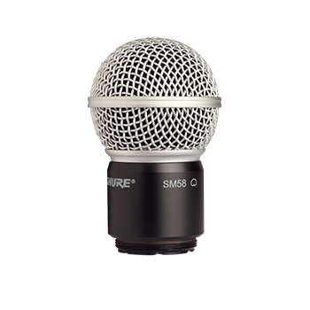
RPW112
Wireless SM58 Cartridge
Wireless SM58 cartridge replaces the cartridge, housing assembly, and matte grille for wireless SM58 microphones.
Our Gear
Browse available Shure microphone rental inventory from VD Audio Rental for touring, theatre, live production, and professional audio applications.

Browse the Shure microphone options below and contact us for availability, production support, and quote requests.
Request a QuoteSelect a category to view available Shure options.

Wireless SM58 Cartridge
Wireless SM58 cartridge replaces the cartridge, housing assembly, and matte grille for wireless SM58 microphones.
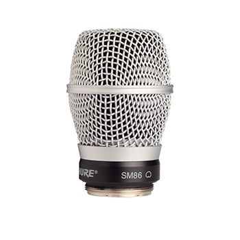
Wireless SM86 Cartridge
Wireless SM86 cartridge replaces the cartridge, housing assembly, and matte grille for wireless SM86 microphones.
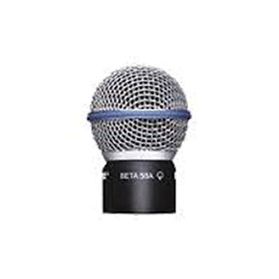
Wireless Beta 58A Cartridge
Wireless Beta 58A cartridge replaces the cartridge, housing assembly, and matte grille for wireless Beta 58A microphones.
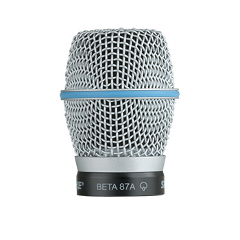
Wireless Beta 87A Cartridge
Wireless Beta 87A cartridge replaces the cartridge, housing assembly, and matte grille for wireless Beta 87A microphones.
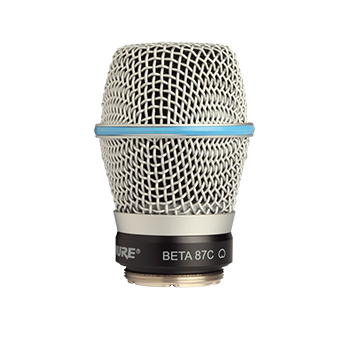
Wireless Beta 87C Cartridge
Wireless Beta 87C cartridge replaces the cartridge, housing assembly, and matte grille for wireless Beta 87C microphones.
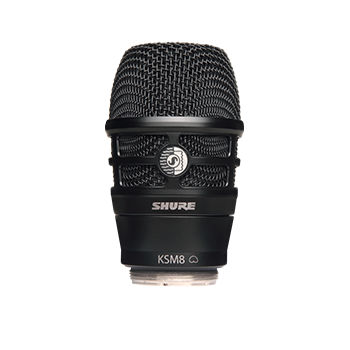
KSM8 Wireless Capsule for Black Shure
Wireless KSM8 capsule enables wireless performance with the KSM8 Dualdyne Cardioid Dynamic Microphone.
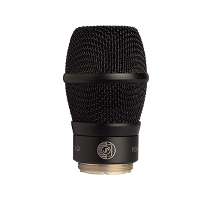
Wireless KSM9 Cartridge
Black wireless KSM9 cartridge replaces the cartridge, housing assembly, and matte grille for wireless KSM9 microphones.
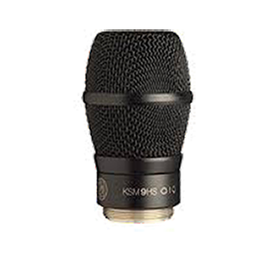
Wireless KSM9HS Cartridge
Black wireless KSM9HS cartridge replaces the cartridge, housing assembly, and matte grille for wireless KSM9 microphones.
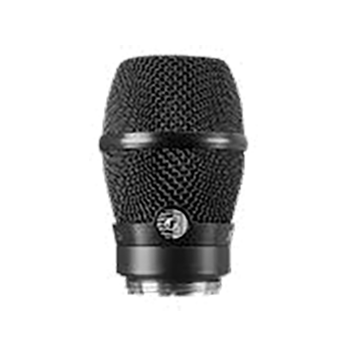
Wireless Cardioid Condenser Vocal Microphone
The KSM11 Wireless Vocal Microphone Capsule redefines vocal performance by providing a prized combination of full lows, clear mids and high-end detail, without the need for extensive EQ. A cardioid condenser designed specifically for live performance, event recording and premium streaming, the KSM11 allows digital wireless systems to present live vocals that must be heard to be believed.
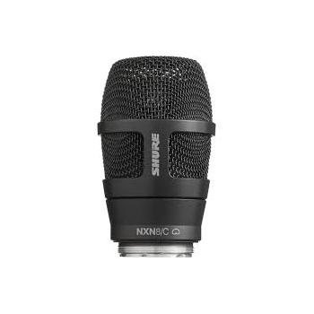
Nexadyne 8/C Cardioid Dynamic Wireless Capsule
Nexadyneâ„¢ 8/C Cardioid Dynamic Wireless Capsule with black finish for use with Shure Handheld Transmitters
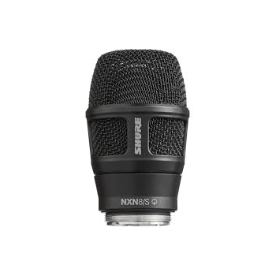
Nexadyneâ„¢ 8/S Supercardioid Dynamic Wireless Capsule
Nexadyneâ„¢ 8/S Supercardioid Dynamic Wireless Capsule with black finish for use with Shure Handheld Transmitters
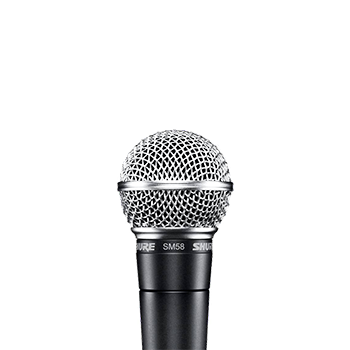
Dynamic Vocal Microphone
With a classic, timeless sound that is both rich and clear, the SM58 is the vocal microphone of choice for legends and contemporary performers alike.
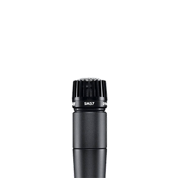
Dynamic Instrument Microphone
The world’s single most versatile microphone. On stage or in studio, the SM57 captures every sound from powerful playing to nuanced performance.
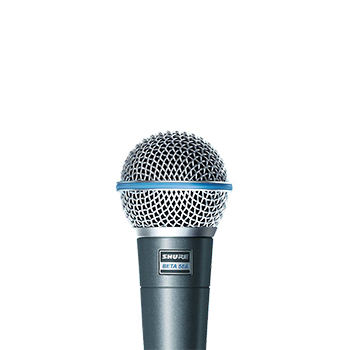
Dynamic Vocal Microphone
For decades, the BETA®58A has been the singer’s best friend, elevating vocal presence to cut through the other sounds on the stage.
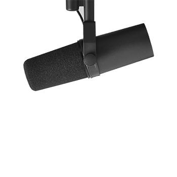
Vocal Microphone
Whether it’s broadcast, podcast or recording, voices need to be handled with care. When purified and polished, every detail has more impact. That’s why the SM7B was built, to capture smooth, warm vocals that connect the speaker to the listener.
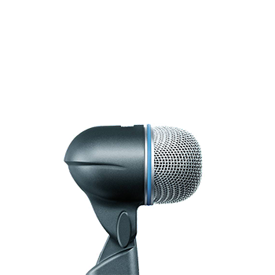
Kick Drum Microphone
Drum microphone provides low-frequency bass punch and SPL handling. It includes dynamic locking stand adapter for easy set-up, steel mesh grille for durability, shock mount for sound isolation, and neodymium magnet for high signal-to-noise ratio.
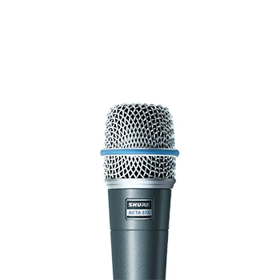
Dynamic Instrument Microphone
Dynamic instrument microphone provides high gain before feedback in demanding environments. It features a steel mesh grille for durability, shock mount to minimize transmission of unwanted noise, and a neodymium magnet for high signal-to-noise ratio.
Iconic Unidyne Vocal Microphone
If you want to capture a classic look, you need the gear to match the genre. Nothing completes the style quite like the 55SH Series II, a microphone that has been gripped by legends for decades. Others may imitate, but none can duplicate the form and function standards Shure has held from our first Unidyne mic to our latest.
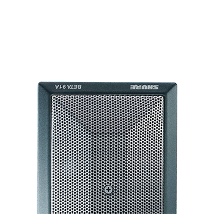
Kick Drum Microphone
Kick drum microphone provides a strong low-end response and maximum gain-before-feedback due to its half-cardioid polar pattern. It features a two-position contour switch to maximize attack and clarity and a low-profile design.
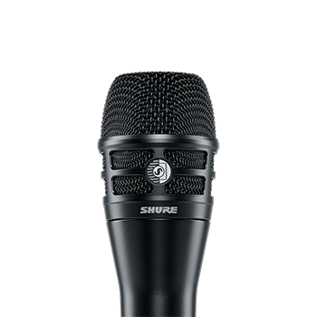
Dualdyne Cardioid Dynamic Vocal Microphone
With two ultra-thin diaphragms and groundbreaking reverse airflow technology, the KSM8 Dualdyneâ„¢ delivers unmatched control of proximity effect, presence peaks, and bleed and requires minimal EQ and processing.
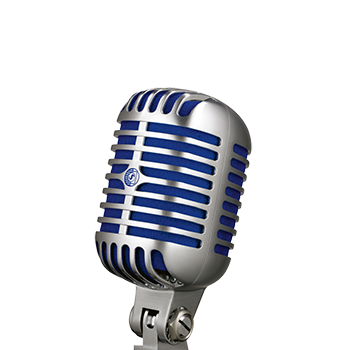
Deluxe Vocal Microphone
How do you set a classic scene for a modern audience? With a time-honored look that brings the clean, pure sound of now. The Super 55 brings the highest degree of vocal quality to the stage in a vintage, stand-mounted microphone.
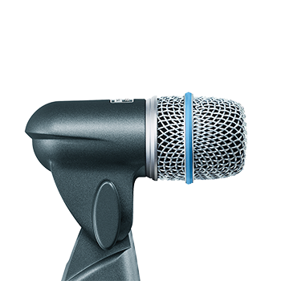
Snare/Tom Microphone
Snare and tom microphone for close miking. Equipped with shock mount for sound isolation, it features a dynamic locking stand adapter for simple set-up, a steel mesh grille for durability, and a neodymium magnet for high signal-to-noise ratio.
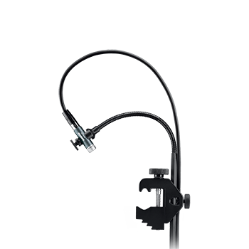
Instrument Microphone
Instrument microphone delivers a smooth and natural response, and consists of an A98D drum mount for secure placement in any configuration and a uniform cardioid polar pattern for excellent gain-before-feedback and off-axis noise rejection.
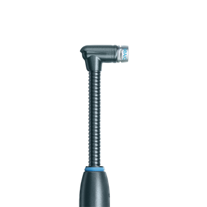
Instrument Microphone
Instrumental microphone combines an integrated preamplifier with a miniature condenser capsule to provide a smooth response for percussion. It features a flexible gooseneck and the A75M microphone mount for secure placement in many configurations.
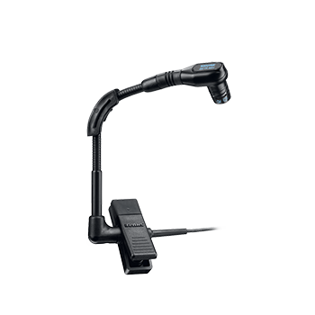
Miniature Instrument Microphone
Miniature instrument microphone delivers high gain-before-feedback and rejection of unwanted noise. It features preamplifier circuitry to improve linearity across the full frequency range, and tailored response for natural sound reproduction.
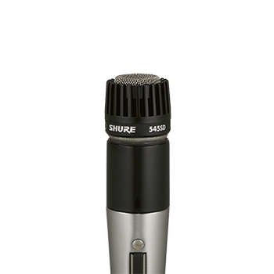
Classic Instrument Microphone
Instrument microphone delivers an exceptionally uniform cardioid pattern to minimize feedback. It features a silent magnetic reed on and off switch with lock-on option and selectable dual-impedance operation.
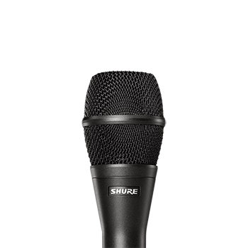
Condenser Vocal Microphone
A premium condenser vocal microphone, the KSM9 captures vocal subtlety with extraordinary detail for live performance.
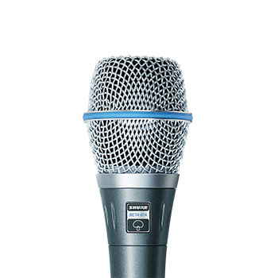
BETA® 87A Vocal Microphone
Add some studio-grade clarity to the live mix. Designed to capture brighter vocals with sparkling accuracy, the BETA® 87A brings more crisp to the concert. And the increased presence will have everyone singing your praises.
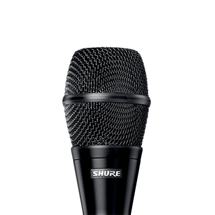
Condenser Microphone with Switchable Polar
Condenser microphone that captures extraordinary vocal detail due to its switchable hypercardioid and subcardioid patterns. It features exceptional consistency across all frequencies, a dual Mylar diaphragm, a shock mount, and multiple color options.
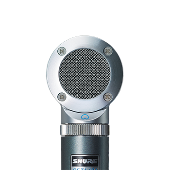
Side-Address Condenser Microphone with interchangeable capsules
The precision-engineered BETA®181 is a versatile condenser instrument microphone with interchangeable polar pattern capsule options.
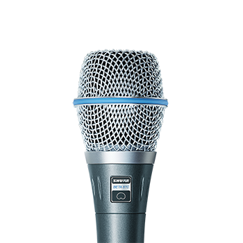
Vocal Microphone
Vocal microphone delivers a tailored response for a warm, natural sound. It features a cardioid polar pattern for maximum isolation, minimal off-axis tone coloration, a 3-stage pop filter to minimize breath noise, and a break-resistant stand adapter.
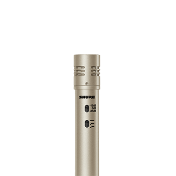
Cardioid Instrument Microphone
Cardioid instrument microphone delivers excellent sound isolation and superior transient response. It features a gold-layered Mylar diaphragm, preamplifier for transparency, subsonic filter to stop low frequency rumble, and a pad for handling SPLs.
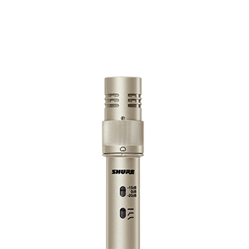
Dual Pattern Instrument Microphone
Dual pattern instrument microphone offers transition between cardioid and omnidirectional patterns and features extended frequency response, pad for handling SPLs, a gold-layered Mylar diaphragm, and a subsonic filter for low frequency rumble.
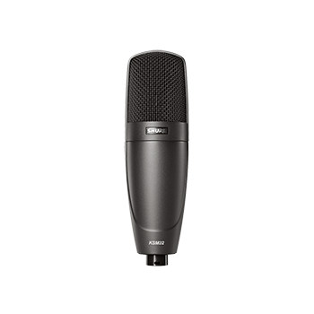
Cardioid Condenser Microphone (Charcoal)
Cardioid condenser microphone delivers a smooth, neutral sound reproduction with full character and consists of a microphone, a padded, zippered carrying bag, and a swivel mount.
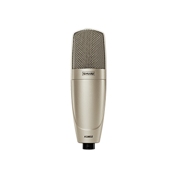
Cardioid Condenser Microphone (Champagne)
Cardioid condenser microphone delivers a smooth, neutral sound reproduction with full character and consists of a microphone, a padded, zippered carrying bag, and a swivel mount.
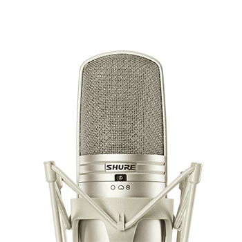
Large Diaphragm Multi-Pattern Condenser Microphone
Multi-pattern condenser offers great recording flexibility due to its compatibility with multiple polar pattern condensers. It features dual gold Mylar diaphragms for superior transient response, a subsonic filter, and preamplifier for transparency.
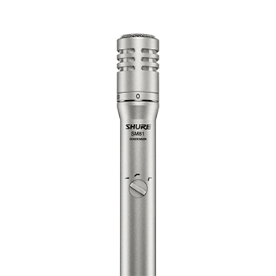
Condenser Instrument Microphone
Cardioid condenser instrument microphone offers a wide frequency response and low self-noise. Features include flat response curve, low noise and high output clipping level, low distortion over a range of load impedances, and low RF susceptibility.
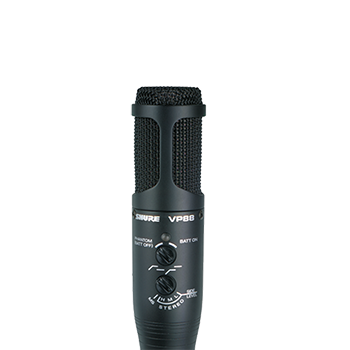
Stereo Microphone
Condenser stereo microphone combines 2 condenser cartridges to create a stereo audio image of the sound source. It includes a windscreen, swivel adapter, and Y-cable, switch-selectable, low-frequency roll off, internal shock mount, and a pop screen.
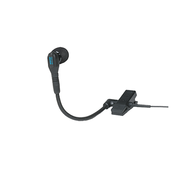
Instrument Microphone
Instrument microphone provides high gain-before-feedback and rejection of unwanted noise. It features preamplifier circuitry for linearity across frequency range, tailored frequency response for studio quality, and a wide dynamic range for high-SPL.
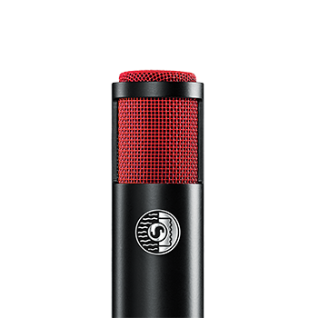
Dual-Voice Ribbon Microphone
Dual-voice ribbon microphone features a bi-directional pattern for premier audio, superior off-axis rejection, and a highly durable ribbon element for increased resilience at extreme SPLs.
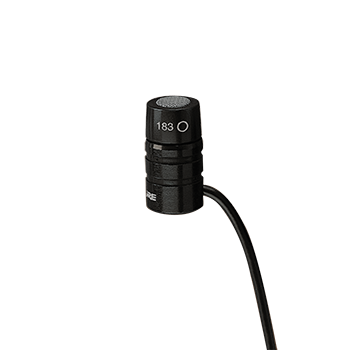
Omnidirectional TQG Lavalier Microphone
Omnidirectional lavalier microphone offers an interchangeable condenser cartridge and consists of a windscreen and a dual tie clip for 2 microphones. It features wide dynamic range and frequency response for accurate and balanced sound reproduction.
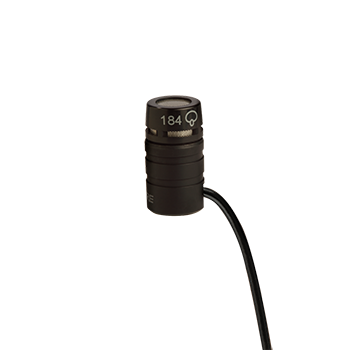
Supercardidioid TQG Lavalier Microphone
The MX184 premium supercardioid lavalier microphone brings a new level of sophistication to personal voice reproduction. Like all Microflex family microphones, this lavalier uses an interchangeable condenser cartridge, meaning there will always be a lavalier to suit your application.
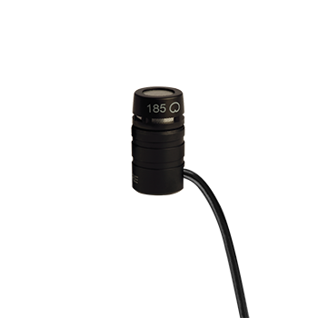
Cardioid TQG Lavalier Microphone
Cardioid lavalier microphone offers an interchangeable condenser and consists of a windscreen and a dual tie clip for 2 microphones. It features wide dynamic range and frequency response for accurate and balanced sound reproduction.
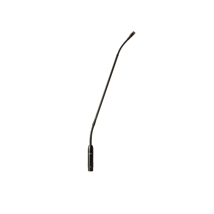
Microflex® Gooseneck Microphone
The right speech doesn’t just inform. It can excite and even transform those who hear it. So, we designed the MX418 to treat spoken audio with the detail and respect it deserves. Because clarity commands attention.
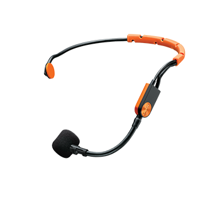
Fitness Headset Condenser Microphone
Cardioid fitness headset condenser microphone offers a moisture-repelling hydrophobic construction for use in fitness training, Features include windscreen and compatibility with Shure bodypack systems for replacement of TA4F-connected microphones.
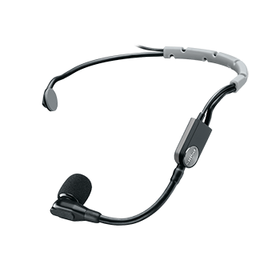
Performance headset condenser microphone
The SM35 Performance Headset Condenser Microphone gives multi-instrumentalists the freedom to express themselves without sacrificing sound quality. A tight, unidirectional cardioid polar pattern provides excellent rejection of off-axis sound sources to prevent feedback and signal bleed onstage, whether in use in small clubs, large installations, or arena tours.
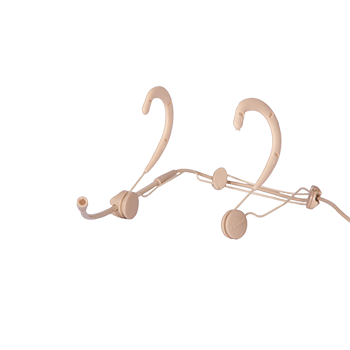
Headworn Vocal Microphone Tan
Headworn vocal microphone for detailed, uncolored sound in an ultra-thin and fully adjustable design. Features comfortable behind-the-ear Dynaflex® earforms, a discreet, detachable microphone boom mount and interchangeable frequency response caps.
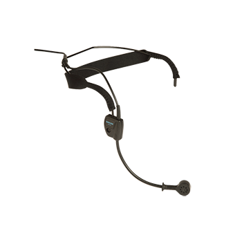
Dynamic Headset Microphone
The Shure WH20 is a rugged, lightweight, dynamic headset microphone that provides high-quality voice pickup. It fits securely for active microphone users, such as aerobics instructors and musicians, with low visibility for stage appearances.
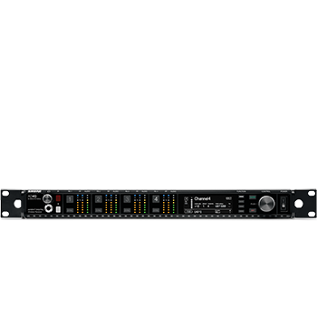
Four-Channel Digital Wireless Receiver
Compatible with all AD series and ADX series transmitters.
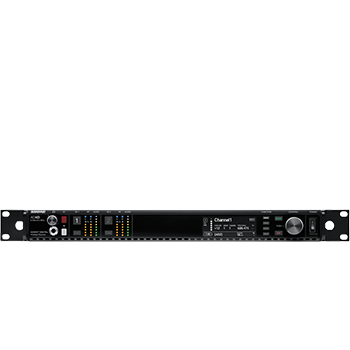
Two-Channel Digital Wireless Receiver
Compatible with all AD series and ADX series transmitters.
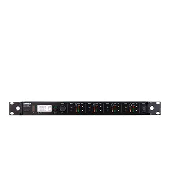
Quad-Channel Digital Wireless Receiver
Digital quad wireless receiver offers an intelligent four-channel option for use in any professional sound reinforcement application. Features include Digital Predictive Switching Diversity, 64 MHz tuning range, and AES 256 encryption for security.
Bodypack Transmitter
AD1 delivers impeccable audio quality and RF performance with wide-tuning, High Density mode, and encryption. Features durable metal construction, optional rechargeable power with dockable charging, and TA4 and LEMO3 connector options.
Bodypack Transmitter
ADX1, like all ADX transmitters, sets the stage for exceptional performance, with wide tuning up to 184 MHz, interference protection, advanced rechargeability, streamlined design, and ShowLink remote control for real-time parameter adjustments right from the booth. Includes two SB910 rechargeable batteries.
Handheld Wireless Microphone Transmitter
AD2 delivers impeccable audio quality and RF performance with wide-tuning, High Density mode, and encryption. Features durable metal construction, rechargeable power with dockable charging, and black or nickel finish options.
Handheld Wireless Microphone Transmitter
ADX2, like all ADX transmitters, sets the stage for exceptional performance, with wide tuning up to 184 MHz, interference protection, advanced rechargeability, streamlined design, and ShowLink remote control for real-time parameter adjustments right from the booth.
Handheld Wireless Microphone Transmitter
ADX2FD, like all ADX transmitters, sets the stage for exceptional performance, with wide tuning up to 184 MHz, interference protection, advanced rechargeability, streamlined design, and ShowLink remote control for real-time parameter adjustments right from the booth.
Dual Channel Receiver
The SLXD4D Dual Receiver is the convenient, streamlining choice for confident speech presentation and vocal performance from lecture halls to live entertainment.
Bodypack Transmitter
The SLXD1 easily syncs with a wireless receiver for confident presentation and performance - from lecture halls to live entertainment.

AXT610 ShowLink Access Point
The AXT610 ShowLink™ access point enables real-time remote control of the Axient™ transmitters. The access point allows comprehensive management of transmitter parameters from the receiver or Wireless Workbench® 6 using 2.4 GHz wireless network communication. All parameter changes occur without interruption to the performer.
Axient Spectrum Manager
Axient Spectrum Manager delivers wide-band UHF spectrum scanning, spectrum analysis, and compatible frequency coordination in a single rack unit.
Axient® Digital Spectrum Manager
Shure Axient® Digital AD600 Digital Spectrum Manager delivers real-time, wide-band spectrum scanning and monitoring from 174 MHz to 2.0 GHz, spectrum analysis, and frequency coordination in a single rack unit. Six antenna connections deliver multiple coverage options while Dante connectivity provides advanced audio monitoring of your network. Use the USB port to export, import, or save backup scans, event logs, and other important data.

Rechargeable Lithium-Ion Battery
Rechargeable lithium-ion battery makes powering Shure wireless systems easy. Features include compatibility with Axient Digital (AD1/AD2), ULX-D, QLX-D, UR5, P3RA, P9R, and P10R systems.

Lithium-Ion Rechargeable Battery
ADX1 bodypack transmitters exclusively use SB910 lithium-ion rechargeable batteries
Lithium-Ion Rechargeable Battery
ADX2, ADX2FD handheld transmitters exclusively use SB920 lithium-ion rechargeable batteries.

Charging module
Charging module charges 2 SB900A Rechargeable Batteries in the SBRC Rack Mount Charging Station.

Shure Battery Rack Charger
Accommodates up to 8 Shure rechargeable bodypack and handheld transmitter batteries in a single rack space. Compatible with Shure rechargeable batteries SB910, SB920, SB910M, AXT910, AXT920 and SB900A. Charging modules sold separately.
2-Bay Networked Docking Charger
The SBC220 2-Bay Networked Charging Station enables docked charging and storage for any combination of two SB900A batteries or ULXD1, QLXD1, AD1 (bodypack) or ULXD2, QLXD2 or AD2 (handheld) wireless transmitters. When the connected to a network, the charging status of each transmitter can be viewed remotely, and up to four SBC220 units can be linked together using shared power and network connectivity.

8-Up Battery Charger
8-battery charger charges 8 SB900A batteries to full capacity within 3 hours. Features include status LEDs to indicate power levels.

Charging Module
Charging Module for SB910 Batteries
Charging Module
Charging Module for SB920 Batteries

Omnidirectional Antenna
The Shure UA860SWB is a passive wide band UHF omnidirectional antenna. For use with certain Shure wireless products.
Axient Antenna Distribution System
Axient antenna distribution system delivers ultra-linear amplification and precision filtering for optimal performance. Features include wideband filtering and up to 15 dB of selectable RF attenuation for signal-to-noise optimization.
Active Directional Antenna
FThe UA874 series of antennas delivers improved wireless signal reception for VHF and UHF wireless systems. Features include rejection of RF signals outside the coverage area and an integrated amplifier with four gain settings.
Microphone Cable
Cable, Microphone, 4-foot (1.3m), 4-pin Mini Connector (TA4F) to XLR Connector (F), used with Shure Body-Pack Transmitters.
TA3F-to-XLR audio cable
1-foot audio cable connects a TA3F connector to an XLR connector.
In-Line Power Adapter
In-line adapter that supplies 12V DC bias power over coaxial cable, US Power Supply.
Sound Isolatingâ„¢ Earphones
The place you’d rather be is right here. Get immersive sound that turns your commute into a concert and your workout into the discovery of new musical dimensions. Available in 4 colors in both wired and wireless options, the SE215 is off-the-shelf audio that’s better listening, period.
Sound Isolatingâ„¢ Earphones
Available in a striking silver color, the SE425 allows you to hear your music the way it was meant to be heard - the way your favorite artists intended. This is what true-to-life sounds like, when accuracy is important and range is imperative. Welcome to the big time.
Sound Isolatingâ„¢ Earphones
Available in bronze, the SE535 delivers spacious, surround sound with a striking separation of highs and lows straight to your brain. Precise clarity with a driving beat will have you checking your pulse.
Sound Isolatingâ„¢ Earphones
State-of-the-art, unparalleled audio is delivered through four custom-engineered drivers – each tailored to blend precisely with the others. Customizable sound signatures for balanced, warm and bright audio is enlightened listening at its finest. Pure bliss for the refined ear, available in four striking color options.
Professional Studio Headphones
The SRH440 Professional Studio Headphones deliver enhanced frequency response with accurate audio across an extended range for home and studio recording. Impedance, power handling and sensitivity are all calibrated for professional audio devices such as DJ mixers, mixing consoles, and headphone amplifier. Includes detachable coiled cable, carrying bag and threaded 1/4" (6.3 mm) gold-plated adapter.
Copyright © 2020 VD Audio Rental. All rights reserved. Ver 2.16
{kind=link}
{kind=link}
{kind=link}
{kind=link}
{kind=link}
{kind=link}
{kind=link}
{kind=link}
{kind=link}
{kind=link}
{kind=link}
{kind=link}
{kind=link}
{kind=link}
{kind=link}
{kind=link}
{kind=link}
{kind=link}
{kind=link}
{kind=link}
{kind=link}
{kind=link}
{kind=link}
{kind=link}
{kind=link}
{kind=link}
{kind=link}
{kind=link}
{kind=link}
{kind=link}
{kind=link}
{kind=link}
{kind=link}
{kind=link}
{kind=link}
{kind=link}
{kind=link}
{kind=link}
{kind=link}
{kind=link}
{kind=link}
{kind=link}
{kind=link}
{kind=link}
{kind=link}
{kind=link}
{kind=link}
{kind=link}
{kind=link}
{kind=link}
{kind=link}
{kind=link}
{kind=link}
{kind=link}
{kind=link}
{kind=link}
{kind=link}
{kind=link}
{kind=link}
{kind=link}
{kind=link}
{kind=link}
{kind=link}
{kind=link}
{kind=link}
{kind=link}
{kind=link}
{kind=link}
{kind=link}
{kind=link}
{kind=link}
{kind=link}